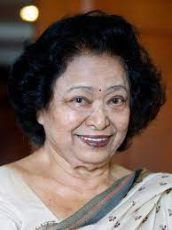
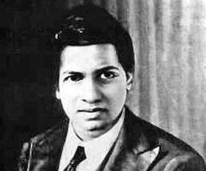
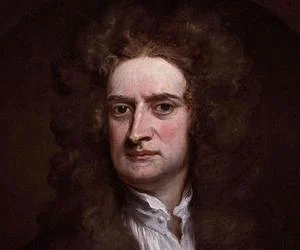
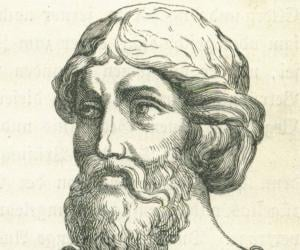
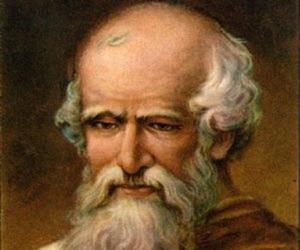

1. SHAKUNTALA DEVI
SHAKUNTALA DEVI

Date Of Birth : 4 November 1929
Place Of BIrth : Bengaluru
Year Of Death : 21 April 2013
Childhood or important incidents of life : She did this without any formal education. At the
age of
six
she demonstrated her arithmetic abilities at the University of Mysore
2. SRINIVASA RAMAUNJAN
SRINIVASA RAMANUJAN

Date Of Birth : 4 November 1929
Place Of BIrth : Bengaluru
Year Of Death : 21 April 2013
Childhood or important incidents of life : She did this without any formal education. At the
age of
six
she demonstrated her arithmetic abilities at the University of Mysore
3. ISSAC NEWTON
ISSAC NEWTON

Date Of Birth: January 4, 1643
Place Of Birth: Lincolnshire, England
Year Of Death: March 31, 1727
Childhood or important incidents of life : One of the most influential and popular scientists of all
time, Sir Isaac Newton played a
prominent role
in our understanding of natural phenomena. He formulated
the law of universal gravitation and laws
of
motion. He also developed the Newtonian telescope
among other devices. Apart from science, Newton
was
also intrigued by religion, occult, and alchemy.
4. PYTHAGORAS
PYTHAGORAS

Date Of Birth: 0570 BC
Place Of Birth: Samos
Year Of Death: 0495 BC
Childhood or important incidents of life : Pythagoras was an Ionian Greek philosopher. He is credited
with many scientific and mathematical
discoveries, including the Sphericity of the Earth, the Theory of Proportions, the five regular solids,
Pythagorean tuning, and the Pythagorean Theorem. Pythagoras influenced other philosophers like Plato and
Aristotle. His philosophy also had a major impact on personalities like Isaac Newton, Johannes Kepler,
and Nicolaus Copernicus.
5. ARCHEMIDIES
PYTHAGORAS

Date Of Birth: 0287 BC
Place Of Birth: Syracuse, Italy
Year Of Died: 0212 BC
Greek mathematician, physicist, and astronomer Archimedes is remembered for his contribution to
mathematics, especially geometry. He laid down theorems related to the area of a circle, and the area
and volume of a sphere, and reached an accurate value of pi. He also invented machines such as the screw
pump.